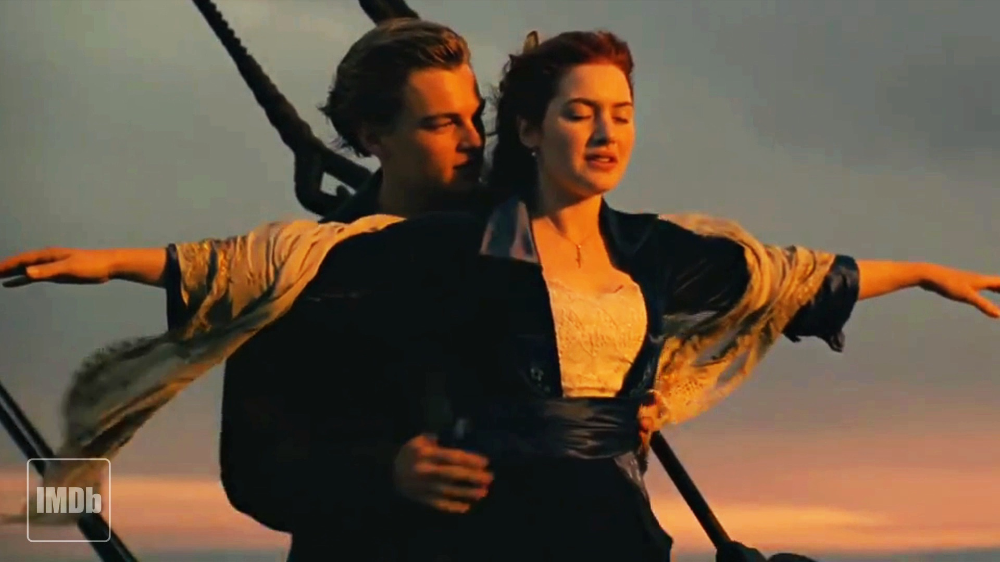

Titanic
La película Titanic cuenta la historia de Jack y Rose, dos jóvenes de clases sociales muy diferentes que se conocen a bordo del famoso transatlántico Durante el viaje surge un romance intenso mientras el barco navega hacia Nueva York.
Rose se siente atrapada por su vida aristocrática y encuentra en Jack libertad y aventura.La noche del 14 de abril de 1912 el Titanic choca contra un iceberg.
El barco comienza a hundirse y el caos se apodera de pasajeros y tripulación. En medio de la tragedia, Jack se sacrifica para que Rose pueda sobrevivir.